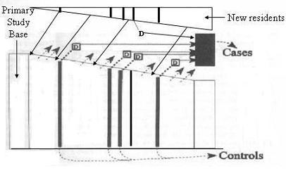

Case Control Design - Incident Density Sampling
Dynamic Primary Study Base
Lead Author(s): Jeff Martin, MD
Case-Control Incidence Density Sampling in a Dynamic Primary Study Base
In case-control incidence density sampling in a dynamic primary study base
- you use a population-based disease registry to identify all new cases of disease during a defined time period.
At the time each new case is reported you sample controls from current residents or members.
- If you do not have a population-based disease registry you can use the rolls of a health care organization and sample just as you did with the registry.
Diagram: Case-Control Incidence Density Sampling in a Dynamic Primary Study Base
In the diagram below, you can see incidence-density sampling in a specified population with new subjects entering.

Sampling in a dynamic cohort gives unbiased estimate of person-time in the same way as sampling in a closed cohort
Other Considerations for Case-Control Density Sampling in a Dynamic Primary Study Base
It is easy to see the analogy between a study using this design and the graphic showing incidence density sampling nested within a cohort (pictured above).
- Residents of a defined geographic area or health care system are treated as members of an open cohort.
- Some leave during the study time period and others move in.
- If there is a good disease registry, such as a cancer registry, which captures the diagnoses of interest, the cases are all known as they would be in a dedicated research cohort study.
Many diseases do not have registries and it may be difficult to identify all of the cases, especially if it is a common disease.
- The HMO setting is better for diseases without registries where the diagnoses can be identified in the medical records of the organization.
- It may be possible to identify all the cases of a rare disease by accessing record for all of the hospitals in a geographic area (creating the study's own registry, in effect).
- But this can be a difficult and expensive process, and residents who seek care outside the area's hospitals also have to be considered unless the proportion that do so is negligible.
Examples of Incidence Density Sampling
These are examples of incident density in a dynamic primary study base.